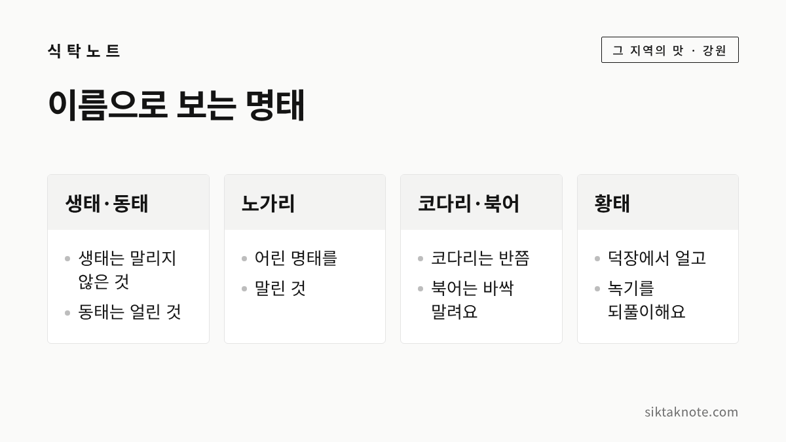
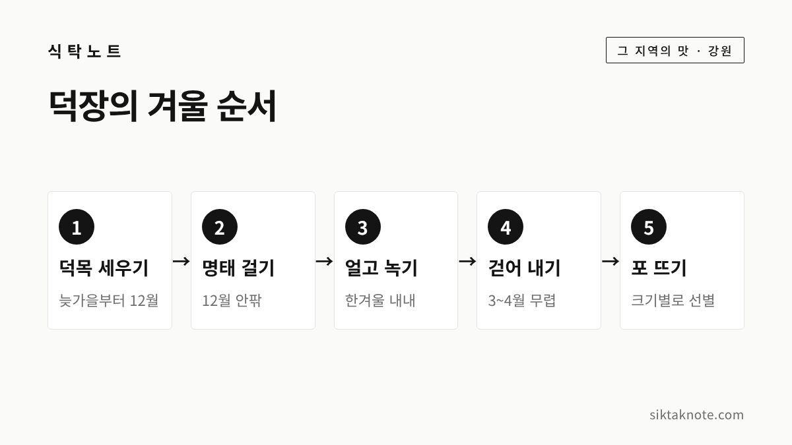

황태 이야기 — 명태가 황태가 되는 3가지와 용대리·대관령 덕장

3줄 요약
- 명태는 말린 정도와 방법에 따라 생태, 동태, 코다리, 북어, 황태 같은 이름으로 불려요.
- 황태는 겨울 덕장에서 얼고 녹기를 되풀이하며 마르는데, 추위와 바람과 눈, 이 3가지가 맞아야 한다고 소개됩니다.
- 용대리가 국내 황태의 약 70%를 만든다고 알려져 있고, 평창 대관령 횡계리에도 덕장 마을이 있습니다.
행사 정보
- 장소
- 인제 황태마을 (강원 인제군 북면 진부령로 307 일대, 용대리)
- 이용
- 상시 개방, 연중무휴, 입장 무료. 체험 프로그램은 사전 예약이 필요하다고 안내돼요
- 문의
- 용대3리마을회관 033-462-4805
- 대관령
- 평창군 대관령면 횡계리 일대 황태덕장마을 (문의 033-335-5301로 안내됨)
- 황태 풍경
- 덕장에 명태가 걸린 모습은 겨울철 볼거리로 소개돼요
2026.11.12 확인 기준. 평창군 누리집과 용대리 황태축제 공식 안내는 확인하지 못했어요. 덕장 풍경은 겨울철 날씨에 따라 달라지니 가시기 전에 문의처로 확인해 주세요.
명태 하나에 이름이 이렇게 많습니다
겨울 식탁에서 빠지지 않는 황태는 사실 명태의 여러 이름 가운데 하나인데요. 명태는 가공한 모양과 잡은 방법, 철에 따라 이름이 달라집니다. 서울신문은 별칭이 70여 개에 이른다고 전했어요. 오늘은 그 가운데 황태가 어떻게 만들어지는지, 덕장 마을 이야기와 먹는 법까지 천천히 풀어 보겠습니다. 황태가 되는 데 필요한 3가지 조건을 중심으로 이야기할게요.

헷갈리기 쉬운 이름부터 짚어 보겠습니다. 위키트리 보도와 서울신문 기사를 종합하면 이렇게 나뉩니다. 갓 잡아 아무 가공도 하지 않은 것이 생태, 겨울에 잡아 얼린 것이 동태입니다. 어린 명태를 말린 것은 노가리라고 해요. 코다리는 반쯤 말린 것이고, 북어는 바싹 말린 것입니다. 황태는 겨울철 덕장에서 얼리고 녹이기를 되풀이하며 자연 건조한 것으로 설명됩니다.
말린 기간은 자료마다 달라요. 매일신문은 코다리 약 1주일, 북어 약 한 달, 황태 약 세 달로 적었고, 서울신문은 황태를 40여 일 말린다고 썼습니다. 어느 쪽이 맞는지는 공식 자료로 확인하지 못했어요. 기간보다는 어디서 어떻게 말리느냐가 이름을 가른다고 보시는 게 마음 편합니다.

황태는 어떻게 시작됐을까요
황태라는 이름은 살이 노란 명태라는 뜻으로 소개됩니다. 서울신문 2019년 기사는 한국전쟁 뒤 원산 출신 실향민들이 인제 용대리에서 말리기 시작했다고 전했고, 세계일보는 함경도 출신 피란민이 고향과 날씨가 비슷한 진부령 일대에서 시작했다고 썼어요. 대관령 쪽은 주강현 선생의 서울신문 연재에 횡계 마을이 황태의 오랜 고향으로 나옵니다.
시작한 해는 보도마다 조금씩 다릅니다. 매일신문은 대관령면이 1957년, 용대리권이 1962년이라고 했고, 서울신문은 1963년 무렵이라고 했어요. 한국민족문화대백과사전에서는 이 부분을 확인하지 못했습니다. 다만 북에서 내려온 분들이 명태 말리던 솜씨를 이어 갔다는 줄기는 같아요.

용대리와 대관령, 두 덕장 마을
한국관광공사 대한민국 구석구석에 따르면 인제 용대리 황태마을은 전국 황태 생산량의 약 70%를 만든다고 소개됩니다. 주민의 80%가 황태 관련 일을 한다고도 해요. 마을 안에 황태 먹거리촌과 판매장이 있고, 해마다 5월에는 황태 축제가 열린다고 안내돼 있습니다.
평창 대관령면 횡계리 일대에도 덕장 마을이 있습니다. 관광 안내 사이트에는 용평스키장 입구 송천 주변이 가장 유명하다고 적혀 있어요. 매일신문은 용대리권과 대관령면 두 곳에 덕장이 모여 있고 국내 생산량 대부분을 차지한다고 보도했습니다. 같은 보도에서 이 두 곳의 비율은 98%로 나오는데, 관광공사가 소개한 용대리 70%와는 기준이 달라 보여요. 어느 쪽이 정확한지는 확인하지 못했습니다.

황태가 되는 3가지 조건
덕장 이야기에서 빠지지 않는 말이 있습니다. 좋은 황태는 날씨와 함께 만든다는 이야기예요. 서울신문과 세계일보 기사에서 공통으로 꼽는 조건이 세 가지입니다.
- 추위: 밤에는 영하 10도 아래로 내려가야 명태가 꽁꽁 얼고, 낮에는 풀려야 한다고 소개됩니다. 얼고 녹기를 되풀이하면서 살이 부드럽고 노랗게 변한다고 해요.
- 바람: 바람이 마르는 속도를 도와 줍니다. 세계일보는 바람이 없으면 명태가 마르지 않고 상한다고 설명했어요.
- 눈: 눈이 명태에 쌓였다 얼고 녹으면서 수분을 공급해 준다고 소개됩니다. 다만 물기를 머금은 무거운 눈은 오히려 좋지 않아서 덮개로 가리기도 한다는 보도가 있습니다.
바닷바람에 얼리지 않고 말리는 북어와 다른 점이 여기에 있어요. 서울신문은 북어를 바닷가에서 한 달 가까이 바람에 말려 만든다고 소개했습니다. 얼었다 녹는 과정 없이 마르기만 하면 북어와 비슷해진다고 한 보도도 있었고요.
덕장의 겨울은 이렇게 흘러갑니다
덕장은 늦가을부터 준비를 시작해요. 매일신문에 따르면 10월 말부터 한 달쯤 낙엽송으로 덕목, 곧 명태를 거는 가로대를 박고 12월 20일 무렵 덕장을 가동합니다. 3월 말쯤 황태를 걷어 낸다고 했어요. 한편 서울신문은 12월부터 이듬해 4월까지 4~5개월을 말린다고 적었습니다. 해마다 날씨에 따라 달라지는 일정이니 대략의 흐름으로만 봐 주세요.

원료인 명태에 대해서는 세계일보가 이렇게 전했습니다. 동해에서 명태가 잘 잡히지 않게 되면서 지금 용대리로 들어오는 원료는 대부분 러시아산이라는 내용이에요. 손질한 명태를 12월 말쯤 덕장으로 옮기는 흐름도 함께 소개했고요. 말린 황태는 모양에 따라 이름이 나뉘는데, 너무 얼어 하얗게 된 백태, 딱딱하게 마른 먹태, 바닥에 떨어진 낙태 같은 이름이 있습니다. 머리가 없거나 찢어진 것은 황태채로 팔린다고 해요.
황태는 이렇게 먹습니다
황태를 가장 많이 먹는 방법은 국입니다. 맑고 깊은 국물의 황태해장국은 속초 쪽에서도 대표 메뉴로 소개돼요. 양념을 발라 굽는 황태구이는 인기 반찬이고, 황태찜과 냉채가 있고, 요즘은 볶음밥과 샐러드로도 인기라고 위키트리는 전했습니다.
서울신문 기사에는 불린 황태포를 고추장 양념에 재운 뒤 구워 내는 황태 고추장 불고기도 나와요. 두부와 감자를 넣고 끓이다 마지막에 쪽파 푼 달걀물을 붓는 북어국도 소개됐습니다. 황태는 먹기 전에 방망이로 두드려 부드럽게 한다고 전해지는데요. 요즘은 잘게 찢어 놓은 황태채가 많아 그대로 쓰는 경우도 많습니다.
코다리는 꾸덕꾸덕한 상태라 찜에 쓰이고, 노가리는 불려서 꽈리고추와 볶는 방법이 소개됩니다.
불리기와 보관은 이렇게
황태채나 황태포는 마른 상태라 요리 전에 물에 불리는 경우가 많습니다. 개인 카페에 올라온 한 황태무국 레시피에서는 찬물에 10~15분 정도 담갔다가 물기를 짜고, 너무 오래 불리면 맛이 빠진다고 적었어요. 첫 번째 불린 물은 헹궈서 쓰라는 안내도 있었습니다. 공식 기관이 정한 불리는 시간은 확인하지 못했고, 제품마다 두께가 다르니 만져 보며 조절하시는 것이 좋겠습니다.
그 레시피는 참기름에 황태를 먼저 볶고 무를 넣은 뒤 물을 부어 끓이는 방식이었어요. 양념의 양은 따로 적지 않았으니 입맛에 맞게 간을 봐 주세요.
매일신문 보도에 따르면 덕장에서 걷은 황태는 냉동창고에 영하 25도로 두면 3년까지 보관할 수 있고, 가공한 황태는 1년 안에 먹는 것이 좋다고 해요. 업체 기준의 설명이라 집에서 그대로 따르기는 어렵습니다. 가정에서의 보관 기준은 공식 자료로 확인하지 못했어요.
그래서 일반적인 건어물 보관 원칙만 말씀드릴게요. 습기를 피하고 공기가 닿지 않게 밀봉하는 것이 기본입니다. 생태나 동태처럼 마르지 않은 명태는 생선 손질·보관법을 참고하시면 됩니다. 끓이고 남은 국은 식혀서 냉장하고 빨리 드시는 것이 좋겠습니다.
겨울 강원 나들이에 곁들이면
덕장에 명태가 가득 걸린 풍경은 겨울철 볼거리로 소개됩니다. 용대리 황태마을은 상시 개방하고 입장은 무료라고 안내돼 있어요. 체험은 사전 예약이 필요합니다. 올겨울 강원 행사는 겨울 강원 축제 일정에서 함께 확인해 보세요.
찬바람에 말려 맛을 낸다는 점에서는 양구의 시래기 이야기와도 닮았습니다. 마지막으로 기억하실 것은 3가지예요. 명태의 이름은 말린 방법으로 나뉘고, 황태는 추위와 바람과 눈이 맞아야 만들어지며, 기간과 비율은 자료마다 달랐다는 점입니다. 확인되는 내용만 적었고, 확인하지 못한 부분은 적지 않았습니다.
자주 묻는 질문
황태와 북어는 같은 건가요? 둘 다 말린 명태지만 말리는 방법이 다르다고 소개돼요. 북어는 바닷가에서 바람에 말리고, 황태는 덕장에서 얼고 녹기를 되풀이하며 말린 것으로 설명됩니다.
황태는 꼭 겨울에만 만드나요? 덕장 작업은 한겨울 추위가 필요해서 12월부터 이른 봄까지 이어진다고 소개돼요. 한 매체는 이 계절이 아니면 완성되지 않는다고 설명했습니다.